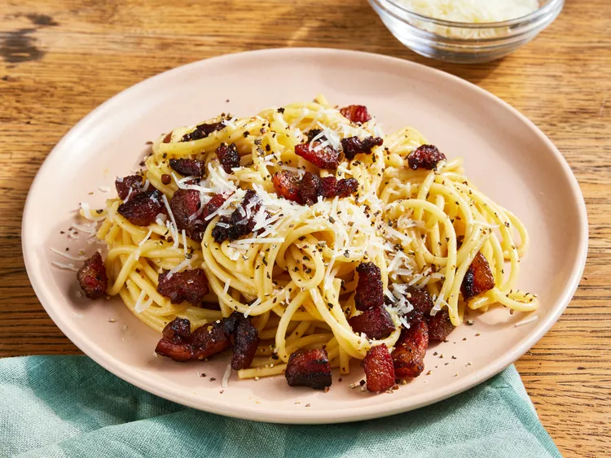

Carbonara Recipe

What Is Spaghetti alla Carbonara?
Carbonara is a Roman dish made with eggs,
hard cheese, and cured pork. Its signature rich
and silky sauce comes from beaten eggs tossed
with hot pasta. The trick to making carbonara is
making sure the pasta is hot enough to cook the
eggs, but not so hot that they curdle.
Ingredients
- 2 teaspoons olive oil
- 1 pound guanciale (cured pork cheek),
diced
- 1 (16 ounce) package spaghetti
- 3 large eggs
- 10 tablesppons grated pecorino Romano
cheese, divided
- Salt and freshly ground black pepper
to taste